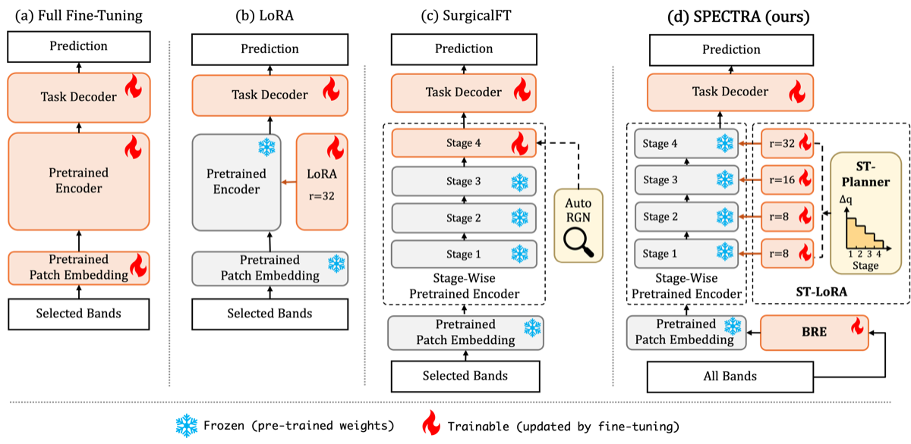
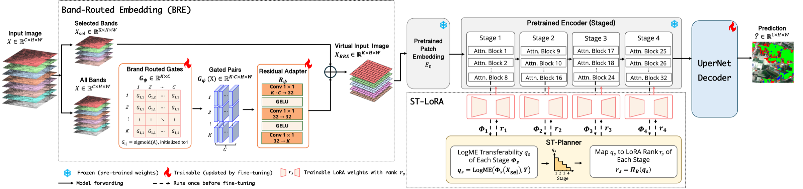
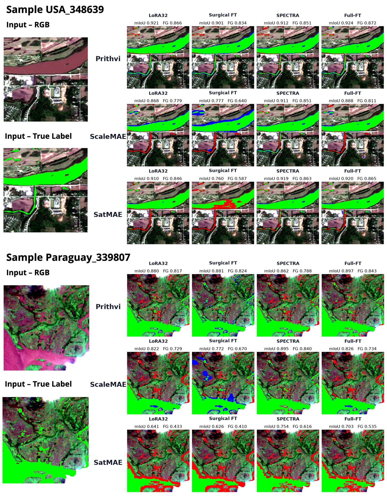
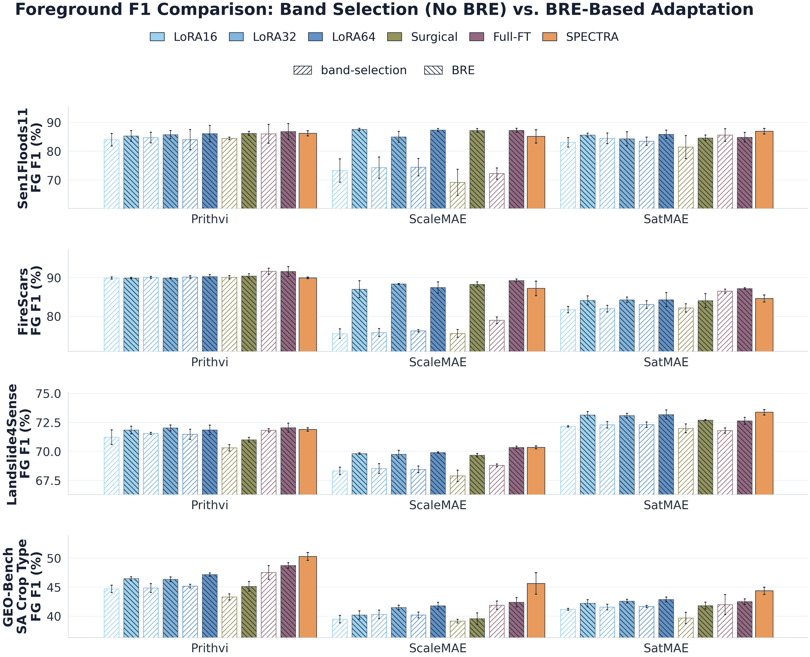
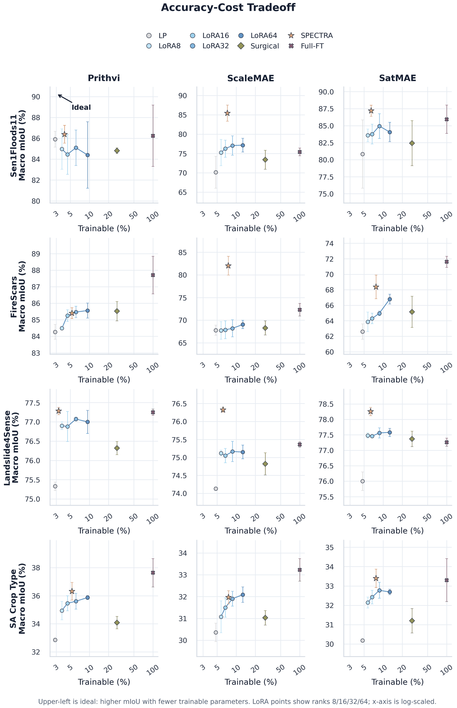

GeoFM
Metric (%)
1University of Maryland, Baltimore County 2NASA Goddard Space Flight Center
ACM SIGSPATIAL 2026 · Research Track
Geospatial foundation models (GeoFMs), pretrained on large-scale geospatial data such as Earth observation (EO), climate, and weather data, have shown promising performance when fine-tuned on diverse downstream tasks. However, there are two challenges in adapting EO-pretrained GeoFMs to practical fine-tuning datasets (downstream datasets). The first challenge is how to handle spectral mismatch: pretrained patch embeddings expect a fixed set of input bands, whereas downstream sensors may provide different channels. The second challenge is how to reduce fine-tuning cost and make it efficient. While existing work has made efforts on these challenges individually, methods that tackle both jointly remain underexplored. We propose SPECTRA, a parameter-efficient fine-tuning framework that addresses both spectral mismatch and adaptation cost. To handle spectral mismatch, SPECTRA introduces Band-Routed Embedding (BRE), which maps all available downstream bands into the band space expected by the pretrained GeoFM. By using BRE, all available bands in the downstream dataset are utilized to improve the selected-band input without changing the pretrained patch embedding interface. To reduce adaptation cost, SPECTRA further introduces a Stage-wise Transferability-aware LoRA (ST-LoRA) fine-tuning. ST-LoRA estimates stage-wise transferability before fine-tuning and assigns stage-specific LoRA ranks to reduce trainable parameters. Across three EO-pretrained GeoFMs and four downstream segmentation datasets, experiments show that BRE improves performance by utilizing all spectral bands, while ST-LoRA reduces trainable parameters compared with full fine-tuning and standard LoRA. Code is available at github.com/big-data-lab-umbc/SPECTRA.
A pretrained patch embedding defines a fixed input band interface: it expects a particular number, order, and spectral meaning of input channels. Downstream datasets often come from other sensors or carry more bands. The common fix, which the paper calls band selection, keeps the downstream bands that best match the pretrained ones and discards the rest. It preserves the pretrained embedding, but every unselected channel becomes invisible to the model.
Selected and discarded bands, and the transfer gap, are from Table 3 and Appendix A of the paper.
Full fine-tuning updates every parameter of a large pretrained encoder, which is expensive in GPU memory, optimization time, and model storage. LoRA trains far fewer parameters, but it usually applies the same rank to every layer or stage, even though encoder stages differ in how well they transfer to a target task. Surgical fine-tuning adapts a subset of layers, but unfreezing an entire stage still needs many more trainable parameters than LoRA.

SPECTRA has two components. Band-Routed Embedding (BRE) handles spectral mismatch at the input; Stage-wise Transferability-aware LoRA (ST-LoRA) controls adaptation cost in the encoder.

BRE builds a K-channel “virtual image” for the frozen patch embedding out of all C downstream bands. The design principle is to keep the selected-band input as a physically grounded anchor and add a learned correction from every available band.
Uniform LoRA gives every stage the same rank. ST-LoRA runs a planner once, before fine-tuning, that measures how well each frozen encoder stage already transfers to the target task and then assigns each stage its own rank. The schedule stays fixed during training.
Predictions from the checkpoints behind the paper’s main table, on held-out test tiles. Pick a dataset, a GeoFM and a tile, then compare four fine-tuning methods on the same input.
Loading the explorer…
Three EO-pretrained GeoFMs, four segmentation datasets, a shared UPerNet decoder, three seeds. All numbers below are from the paper.
SPECTRA reaches strong accuracy with only 3.29–7.73% trainable parameters. The gains are clearest for ScaleMAE and SatMAE, whose pretrained band interfaces differ most from the downstream sensors. On ScaleMAE, SPECTRA lifts Sen1Floods11 macro mIoU from 77.17 (LoRA-64) and 75.41 (full fine-tuning) to 85.45, and FireScars from 69.03 and 72.30 to 82.05.
Test mean ± standard deviation over seeds 42–44 (Table 4 in the paper). Bold marks the best value in each column, leaving out full fine-tuning, which serves as a high-cost reference. FG IoU is foreground IoU.

Averaged over three GeoFMs, four datasets and five fine-tuning policies, replacing band selection with BRE raises mean macro mIoU from 66.36 to 69.24 (+2.88 points). A direct MLP projector that also uses every band lowers it to 64.08 (−2.28). Extra bands are useful, but the input adapter has to preserve the pretrained spectral interface: the MLP changes the input distribution before the pretrained patch embedding, so the model must relearn a spectral tokenizer while adapting to the task.
| Fine-tuning method | n | Band selection | + MLP | + BRE | Δ MLP | Δ BRE |
|---|---|---|---|---|---|---|
| LoRA-16 | 12 | 65.89 | 64.26 | 68.95 | −1.63 | +3.06 |
| LoRA-32 | 12 | 66.32 | 63.59 | 68.90 | −2.73 | +2.59 |
| LoRA-64 | 12 | 66.45 | 63.84 | 69.30 | −2.61 | +2.85 |
| Surgical | 12 | 65.37 | 63.20 | 68.84 | −2.16 | +3.48 |
| Full-FT | 12 | 67.77 | 65.49 | 70.20 | −2.28 | +2.43 |
Average test macro mIoU (%) over n matched GeoFM–dataset pairs; deltas are relative to band selection with the same fine-tuning method (Table 5 in the paper).
The pattern holds per cell. Across the 60 paired baseline-policy cells, BRE improves foreground F1 in 56, by +3.08 F1 points on average; foreground IoU rises by +4.15 points on average. The largest gains appear where band selection throws away the most, such as ScaleMAE on Sen1Floods11 and FireScars.


Each panel plots macro mIoU against the share of trainable parameters. Points further left train fewer parameters; points higher are more accurate. SPECTRA generally sits far left of full fine-tuning and surgical tuning while staying competitive with, or above, nearby LoRA ranks.
The table below isolates rank allocation on Sen1Floods11. Rows M1–M8 are manually designed schedules with different depth preferences and budgets; the highlighted row is chosen by the ST-LoRA planner. A larger rank budget does not automatically give better accuracy, and the planner lands on an efficient schedule without searching the \(|\mathcal{R}|^S\) possible rank combinations.
| Schedule | Ranks, stage 1→4 | Rank budget | Trainable params | Macro mIoU (%) |
|---|---|---|---|---|
| GeoFM: Prithvi-EO-2.0 600M | ||||
| Manual M1 | [4, 4, 8, 16] | 32 | 23.94M | 86.58 ± 0.71 |
| Manual M2 | [16, 8, 4, 4] | 32 | 23.94M | 84.98 ± 2.37 |
| Manual M3 | [8, 16, 16, 8] | 48 | 26.57M | 85.85 ± 2.13 |
| Manual M4 | [4, 8, 16, 32] | 60 | 28.53M | 85.85 ± 1.47 |
| Manual M5 | [32, 16, 16, 8] | 72 | 30.50M | 85.02 ± 2.39 |
| Manual M6 | [8, 16, 24, 32] | 80 | 31.81M | 85.22 ± 1.89 |
| Manual M7 | [4, 8, 16, 64] | 92 | 33.77M | 86.05 ± 1.05 |
| Manual M8 | [64, 32, 16, 8] | 120 | 38.36M | 85.15 ± 2.89 |
| ST-LoRA planner | [8, 16, 16, 8] | 48 | 26.35M | 85.88 ± 1.24 |
| GeoFM: ScaleMAE | ||||
| Manual M1 | [4, 4, 8, 16] | 32 | 18.23M | 85.27 ± 1.77 |
| Manual M2 | [16, 8, 4, 4] | 32 | 18.23M | 84.98 ± 1.82 |
| Manual M3 | [8, 16, 16, 8] | 48 | 19.80M | 84.63 ± 1.75 |
| Manual M4 | [4, 8, 16, 32] | 60 | 20.98M | 85.15 ± 1.83 |
| Manual M5 | [32, 16, 16, 8] | 72 | 22.16M | 84.99 ± 1.67 |
| Manual M6 | [8, 16, 24, 32] | 80 | 22.95M | 85.25 ± 1.68 |
| Manual M7 | [4, 8, 16, 64] | 92 | 24.13M | 85.12 ± 1.89 |
| Manual M8 | [64, 32, 16, 8] | 120 | 26.88M | 85.01 ± 1.59 |
| ST-LoRA planner | [16, 32, 16, 16] | 80 | 22.95M | 85.29 ± 2.17 |
Stage-wise LoRA with BRE on Sen1Floods11; bars sketch the rank per stage (Table 6 in the paper).
Install the package, point it at your datasets, and fine-tune. Full setup, dataset sources and every baseline command are in the README; the hyperparameters behind each table row are in the hyperparameter appendix.
git clone https://github.com/big-data-lab-umbc/SPECTRA.git
cd SPECTRA
pip install -e .
# where the Sen1Floods11 hand-labeled data lives
export SPECTRA_SEN1FLOODS11_ROOT=/path/to/sen1floods11SPECTRA (BRE + ST-LoRA) on Prithvi-EO-2.0 600M and Sen1Floods11:
CUDA_VISIBLE_DEVICES=0 python scripts/finetune.py \
--config configs/prithvi_sen1floods11.yaml \
--method spectra \
--st-planner repair \
--seed 42 --split-seed 42 \
--loss-mode ce_dice_dwa \
--save-checkpointsThe matched LoRA-32 baseline with band selection:
CUDA_VISIBLE_DEVICES=0 python scripts/finetune.py \
--config configs/prithvi_sen1floods11.yaml \
--method lora32 \
--seed 42 --split-seed 42 \
--loss-mode ce_dice_dwa \
--save-checkpointsEverything used in the paper is public. Numbers in brackets point to the reference list below.
| GeoFM | Pretraining data | Input interface | Bands K | Backbone | Paper | Weights and code |
|---|---|---|---|---|---|---|
| Prithvi-EO-2.0 | HLS (Landsat/Sentinel-2) | HLS optical | 6 | ViT-Huge | [1] | Weights (600M) · Code |
| SatMAE | fMoW-Sentinel / Sentinel-2 | Sentinel-2 multispectral | 10 | ViT-Large | [2] | Code and weights |
| ScaleMAE | fMoW/ImageNet RGB | RGB | 3 | ViT-Large | [3] | TorchGeo implementation |
| Dataset | Input source | Bands C | Classes | Task | Reference | Download |
|---|---|---|---|---|---|---|
| Sen1Floods11 | Sentinel-2 / Sen1Floods11 | 13 | 2 | Flood | [4] | GitHub |
| FireScars | HLS FireScars / GEO-Bench | 6 | 2 | Burn-scar | [6] | Hugging Face: HLS Burn Scar Scenes |
| Landslide4Sense | Sentinel-2 + DEM channels | 14 | 2 | Landslide | [5] | Hugging Face mirror |
| SA Crop Type | Sentinel-2 L2A / GEO-Bench | 12 | 10 | Crop-type | [6] | GEO-Bench · Hugging Face |
| Component | Used for | Reference | Code |
|---|---|---|---|
| TerraTorch | Prithvi segmentation task and the shared UPerNet decoder | [10] | github.com/torchgeo/terratorch |
| LoRA | Reference implementation behind the LoRA adapters | [7] | github.com/microsoft/LoRA |
| LogME | Reference implementation of the transferability score used by the ST-planner | [9] | github.com/thuml/LogME |
The complete reference list is in the paper.
@inproceedings{li2026spectra,
title = {SPECTRA: Band-Routed Embedding and Stage-Wise LoRA for Cross-Sensor Fine-Tuning of Geospatial Foundation Models},
author = {Li, Xingyan and Caraballo-Vega, Jordan A. and Gong, Jie and Carroll, Mark L. and Wang, Jianwu},
booktitle = {The 34th ACM International Conference on Advances in Geographic Information Systems (SIGSPATIAL '26)},
year = {2026},
address = {Riverside, CA, USA},
publisher = {ACM},
doi = {10.1145/3841645.3842981},
eprint = {2608.01751},
archivePrefix = {arXiv}
}